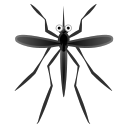

<header class="center">
    <h1>Mosquito.js</h1>
</header>
<main id="mosquito">
    
</main>
<style>
    main {
        position: fixed;
        width: 30px;
        padding: 10px 0px;
        transition-timing-function: linear;
        user-select: none;
        display: none;
    }

    h1 {
        margin: 0px auto 25px;
        font-size: 65px;
        font-weight: 700;
        letter-spacing: 0.5px;
        line-height: 50px;
    }

    .center {
        display: flex;
        justify-content: center;
        align-items: center;
        user-select: none;
    }
</style>
<script type="module">
    import { m_start, m_stop, clap } from './lib/mosquito.js';

    // log-normal distribution
    function lnd(u, d) {
        let z1 = 0, z2 = 0
        while (z1 === 0) z1 = Math.random()
        while (z2 === 0) z2 = Math.random()
        return Math.exp(u + d * Math.sqrt(-2.0 * Math.log(z1)) * Math.cos(2.0 * Math.PI * z2))
    }

    // mosquit
    const mosquito = document.getElementById("mosquito")
    if (Math.random() > 0.85) mosquito.style.filter = "invert(50%) sepia(100%)" // house mosquito
    let speed = 0.0001 * lnd(1.05, 0.2) // ~0.0003

    const flying = (() => {
        let time = performance.now()
        let theta = Math.random() * 1000

        let scr_x = 0, scr_y = 0

        return () => {
            const time2 = time
            time = performance.now()
            theta += (time - time2) * Math.PI * speed
            const math_x = Math.cos(theta)
            const math_y = Math.cos(Math.sqrt(2) * theta)

            const scr_x2 = scr_x
            const scr_y2 = scr_y
            scr_x = window.innerWidth / 2 * 1.2 * math_x + window.innerWidth / 2 - mosquito.offsetWidth / 2
            scr_y = window.innerHeight / 2 * 1.2 * math_y + window.innerHeight / 2 - mosquito.offsetHeight / 2
            const r = Math.atan2(scr_y - scr_y2, scr_x - scr_x2) / (2 * Math.PI) * 360 + 90

            mosquito.style.transform = `translateX(${scr_x}px) translateY(${scr_y}px) rotate(${r}deg)`
        }
    })()

    // calculate interval
    const interval_ms = 100
    mosquito.style.transitionDuration = `${interval_ms}ms`

    // the first itelation
    flying()
    mosquito.style.display = "block"

    // run
    const clock = setInterval(flying, interval_ms)

    mosquito.addEventListener('mousedown', e => { // clap
        if (Math.random() > 0.3) {
            clearInterval(clock)
            m_stop()
        }
        else speed /= 2
    })

    let firstClick = true
    document.addEventListener('mousedown', e => { // mosquito noise
        if (firstClick) {
            m_start()
            firstClick = false
        }
        clap()
    })

    // for debug
    const debug = true
    if (debug) {
        document.addEventListener('keydown', function (event) {
            if (event.key == "f") {
                clearInterval(clock)
                m_stop()
            }
        })
    }
</script>